5-SURE Safe Rides is a program run by Stanford University's Office of Substance Use Programs Education & Resources (SUPER) and operates a hotline which students can call to hail a ride between any location on campus between 8pm and 2am every day. Anyone with a Stanford ID number may call the hotline, is assigned a driver by a student dispatcher, and the driver picks them up to take them to their stated destination.
In the first half of the course Service Design, our team explored the involvement of different stakeholders that make up this on-campus service to identify potential areas for improvement.
interviews
After creating an actor map, recruiting plan, and screener, we aimed to analyze as diverse contributors to the program. We then created interview guides, transcripts, and summaries for each actor group interviewed. In total, we interviewed 11 individuals.
ACTOR GROUPS INTERVIEWED
co-directors of 5-SURE
drivers
SUPER
5-SURE On Foot (another service under SUPER)
campus residential assistants
riders
"un-riders" (those who attempted to book a 5-SURE ride but never completed the ride
grounded theories - problem identification
In synthesizing our interviews, we proceeded with the following theory and relevant sub-theories. View the full synthesis with evidence here.
5-SURE SafeRides operates with outdated, labor-intensive systems managed by a few experienced students, leading to inefficiency and unsustainability. Its low visibility, as a nighttime, student-run program, complicates coordination with campus partners for necessary support. The service’s safety-critical status heightens the emotion involved and increases the severity of these gaps in service, especially as denying any rides feels like abandoning fellow students.
Everything rests on the shoulders of students, despite the University’s claim of ownership/making it look professional
Students are unsure of the needs 5-SURE is intending to address — emotion vs pragmatic approach
There is high demand and need for the service which is unsuitable for the current minimal capacity.
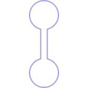
journey map
We each created a journey map predicting the potential thoughts and behaviors of an actor inspired by our interviews. This allows us to identify points of emotion during the experience. The below journey map is created for a 5-SURE rider.
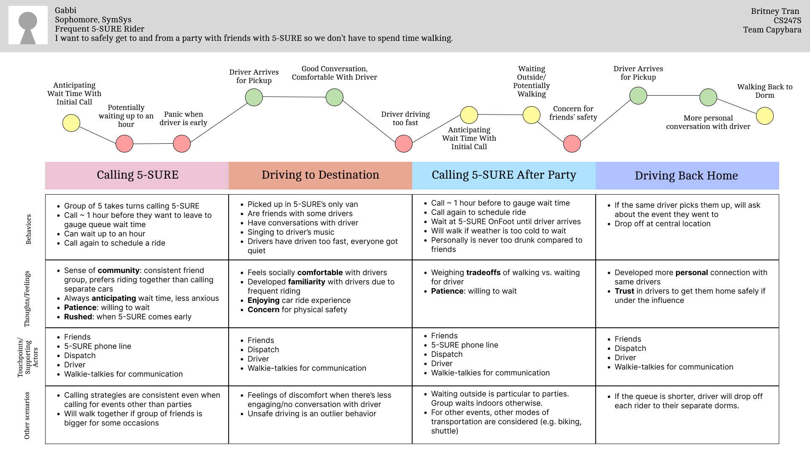
experience prototypes
As a team, we brainstormed 27 HMWs and listed several ideas for potential prototypes to test our favorited HMWs. With individual sketching and "heat map" voting, we narrowed down to three experience prototypes.
THE LOTTERY
Students fill out a form during a set time window with their preferred pickup time
Students are notified of the time they are assigned by text
Does randomly assigning preferred ride times reduce organizational strain on the person coordinating the drivers' schedule?
Hypothesis: This will save 5-SURE staff time, decreasing overall wait times. Students also will be less frustrated at staff if they had a fair chance at getting their desired time, but may cancel more.
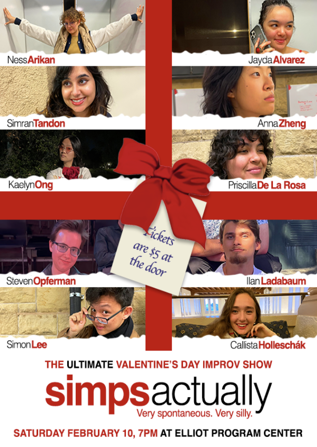
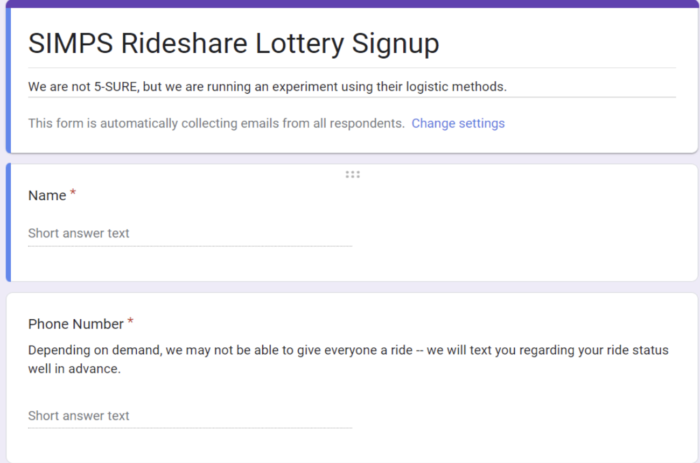
update queue status
Send riders queue updates through text messages Q
Queue status, estimated time of driver arrival, etc.
Are riders more prepared for their ride when given updates on their place in the queue, thus reducing delay and overall wait times?
Hypothesis: Riders will be able to better plan for their ride with text updates, and will arrive to the car quicker.
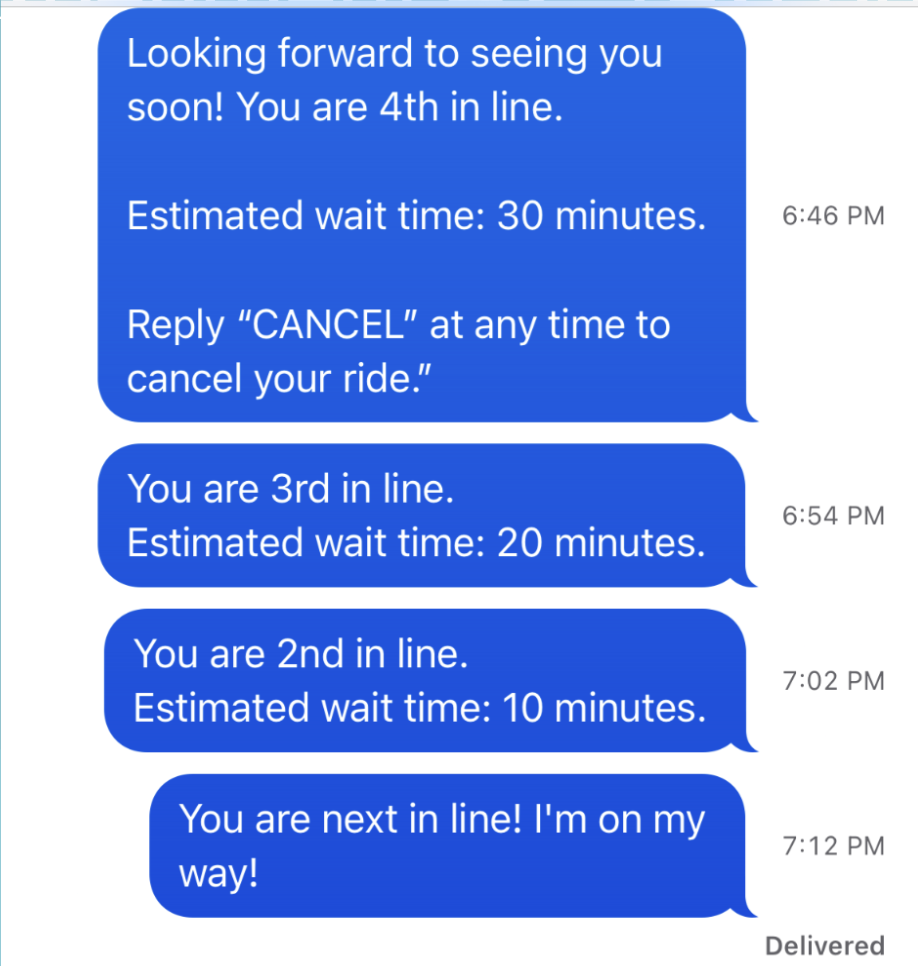
5-SURE SONG (DARK HORSE)
When 5-SURE arrives, play a loud song communicating the time remaining before the driver leaves
Keep track of how long it took the rider to get into the car
Will hearing the song will motivate/pressure the rider to get outside because they are reminded that someone is waiting for them?
Hypothesis: Hearing the song will motivate the rider to get outside because they are reminded that someone is waiting for them. Having a song that everyone can hear helps the driver enforce their own policy of leaving if the passenger does not show up in a timely manner.
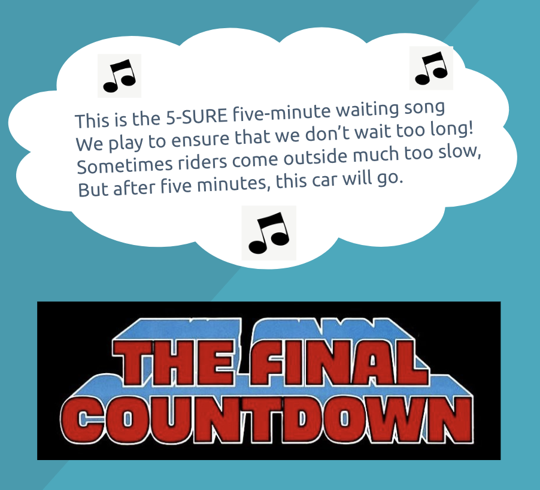
insights
The Lottery
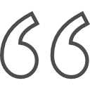
I didn't know if I was supposed to run.
Riders were not comfortable with scheduling rides ahead of time because they could not commit to being at a particular location at that time .
Update queue status
I packed my bag and put on my shoes on at the 10 minute warning
Did their school work while waiting until they felt appropriate it was time to get ready.
the 5-sure song
I could only hear the music once I left my room
Passenger felt stressed. They would have been more attentive given a visual timer since they couldn't hear the song.
Service Design: Secrets of the City
Placed on a new project during the latter half of Service Design, my new team worked on designing and prototyping phases. Leveraging on the student need to provide, document, and organize recommendations and experiences while studying abroad, we developed a Figma medium-fidelity prototype of a mobile app, Secrets of the City. Throughout the process of this project, we kept a running PRD.
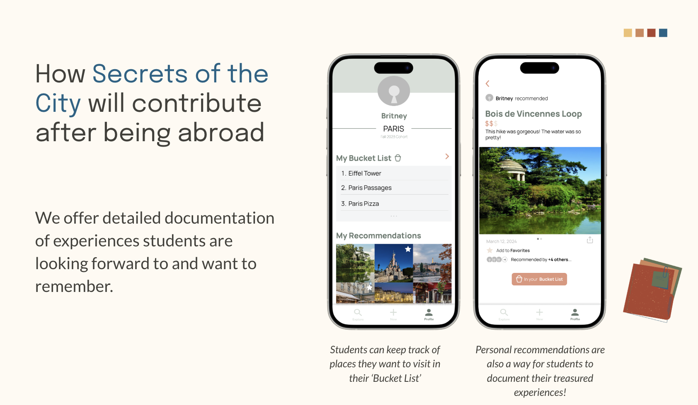
Access our convince document detailing our process and suggested next steps.
comparative analysis
To inspire our design, we began by doing a comparative analysis of existing solutions that fall under functionality patterns we wanted to incorporate: listing recommendations, community posting, search and filters, and an interactive map. Some apps we explored included Goodreads, Yelp, and Google Maps.
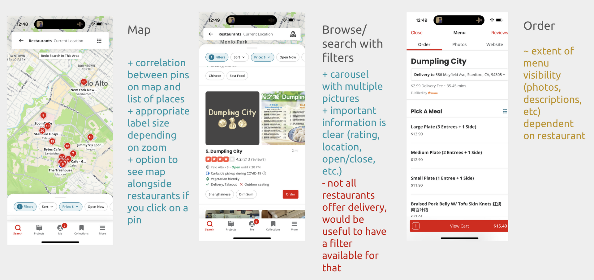
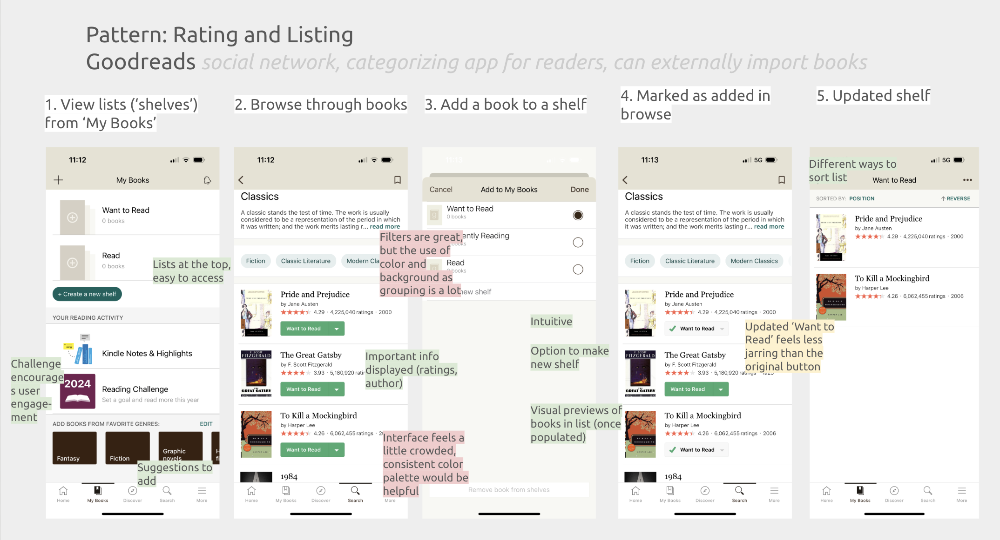
moodboards and design palettes
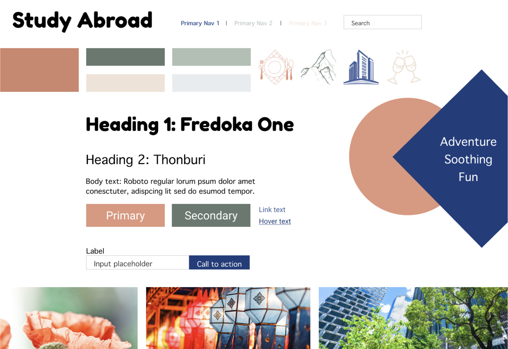
Sample Title
Sample Text
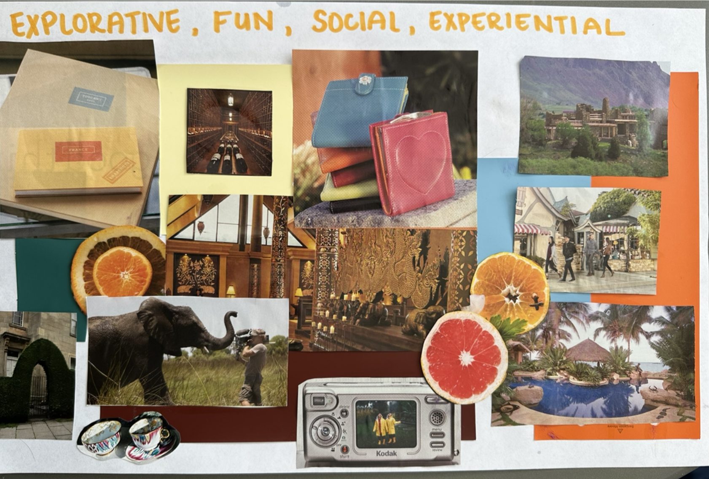
Sample Title
Sample Text
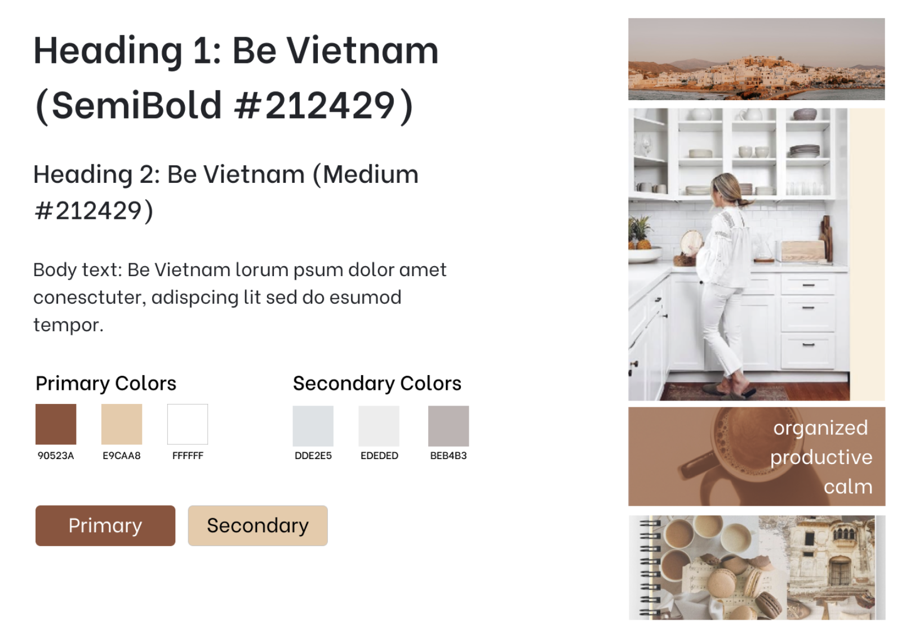
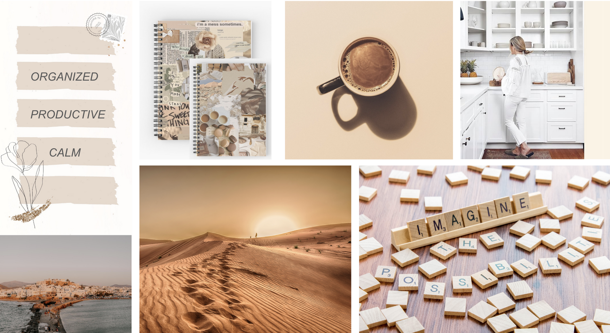
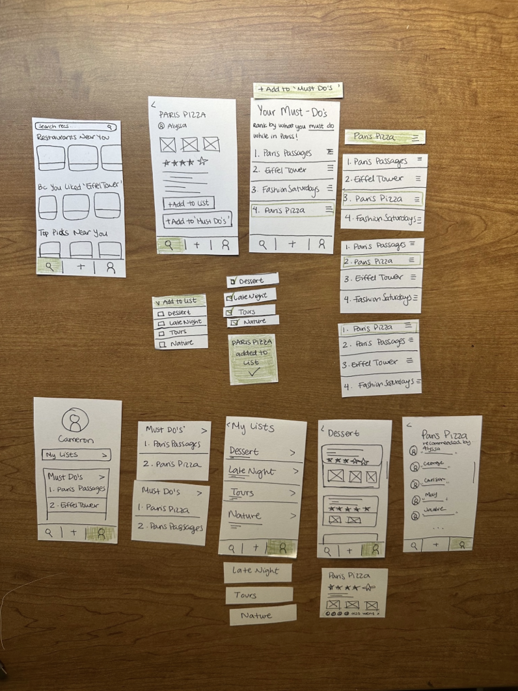
prototyping and testing
PAPER PROTOTYPES
After rounds of concept sketching, we created paper prototypes for the design patterns we wanted to embed into our solution.
FIGMA PROTOTYPES
As we moved onto digital prototypes, we continued to iterate over testing and feedback. We conducted a total of 9 rite tests resulting in 7 iterations of Figma prototypes.